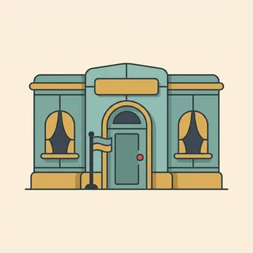

deutschoderwas · Sprechclub · Woche 7 · Strang B · Teil 2 · Donnerstag, 29. Oktober
Wann sie passen — und wann besser nicht
Am Dienstag haben wir gesammelt. Heute wird es heikler: Dieselbe Wendung, die unter Kollegen locker und sympathisch klingt, wirkt in einer Bewerbung unpassend und in einem Brief ans Amt fast unhöflich. Redewendungen sind nicht falsch oder richtig — sie sind am Platz oder eben nicht. Und genau das kann man lernen.
Dein Niveau
Gleiches Thema, andere Sätze. Wechsle jederzeit — probier ruhig beide Seiten aus.
Dieselben Wörter, drei verschiedene Wirkungen
Ich habe die Nase voll. Unter Freunden: völlig normal. In der Teambesprechung: ehrlich, vielleicht etwas heftig. In einer Mail an die Hausverwaltung: unpassend, weil dort niemand deine Stimmung hören will, sondern dein Anliegen lesen. Der Satz ändert sich nicht — der Raum ändert sich.
Wo würdest du ich habe die Nase voll sagen, wo nicht?
Gibt es Wörter, die du nur unter Freunden benutzt?
Wie merkst du, dass ein Satz zu locker war?
Woran erkennst du in einer fremden Sprache die Stilebene eines Ausdrucks?
Ist es schlimmer, zu locker oder zu förmlich zu klingen?
Welche Situation ist für dich am schwersten einzuschätzen?
🔑 Die Frage, die alles entscheidet:Würde die Person, mit der ich rede, diesen Satz auch zu mir sagen? Wenn ja, passt er. Wenn nein, ist er wahrscheinlich zu locker — oder zu steif. Diese eine Frage ersetzt eine ganze Stiltabelle.
Die zweite Falle: über Sachen oder über Menschen
Manche Wendungen beschreiben eine Lage — der Plan hat Hand und Fuß. Andere bewerten einen Menschen — der geht mir auf den Keks. Die ersten kannst du fast überall benutzen. Die zweiten sind auch unter Freunden riskant, weil sie beim Betroffenen ankommen wie ein Urteil, nicht wie eine Beobachtung.
Welche Wendungen über Menschen kennst du?
Wie fühlt es sich an, wenn jemand so über dich redet?
Wie könnte man dasselbe freundlicher sagen?
Warum wirken Wendungen über Menschen schärfer als normale Kritik?
Wann ist ein bildhafter Ausdruck ein Vorteil, wann ein Risiko?
Wie sagt man dasselbe, ohne die Person zu bewerten?
💡 Eine Faustregel, die trägt:Über Sachen darfst du bildhaft reden, über Menschen lieber sachlich.Der Zeitplan hat Hand und Fuß ist ein Kompliment. Du gehst mir auf den Keks ist ein Angriff — auch wenn es lustig klingt, und selbst dann, wenn es stimmt.
Kurz zurück: Dienstag in zwei Minuten
Falls du Teil 1 verpasst hast — das hier reicht, um heute mitzumachen.
die Nase voll habenHand und Fuß habenganz Ohr seinzum Hals heraushängenBauchschmerzen habendie Ärmel hochkrempelndas Gesicht verlierendie Finger davon lassenauf die leichte Schulter nehmenjemandem den Rücken stärken
Der Artikel, nicht mein
So ging die RegelIch wasche mir die Hände, nicht meine Hände. Der Dativ sagt schon, wem sie gehören.
Eingefroren
So ging die FormNicht steigern, nichts austauschen, Reihenfolge lassen. Es gibt kein sehr Hand und Fuß und kein ganz Ohren.
Warum heißt es die Nase voll und nicht meine?
Was passiert, wenn man eine Wendung steigert?
Bei welcher Wendung gehört ein Dativ fest dazu?
🔁 Zu zweit, dreißig Sekunden: Einer nennt eine Wendung von Dienstag, der andere baut sie in einen Satz aus seinem Alltag ein — mit richtigem Fall. Dann geht es los: Heute fragen wir nicht mehr, wie sie heißt, sondern wo sie hingehört.
Zwölf Wörter für Stil, Ton und Situation
Sagt jedes Wort laut — mit Artikel. Und gleich eine Situation dazu: Wo in deinem Alltag kommt sie vor?
der Ton
„Der Ton war unpassend, der Inhalt stimmte.“
💡 Das Sprichwort dazu kennt jeder: Der Ton macht die Musik. Und im Berufsalltag hörst du im richtigen Ton — damit ist genau das gemeint, worum es heute geht.
umgangssprachlich
„Das ist umgangssprachlich, aber nicht falsch.“
💡 Ein wichtiges Wort für Wörterbücher: Steht dort ugs., gehört der Ausdruck in ein lockeres Gespräch — nicht in eine Bewerbung. Die Abkürzung findest du in fast jedem Eintrag.

förmlich
„Beim Amt schreibt man förmlich.“
💡 Nicht zu verwechseln mit formell, das sich auf Regeln bezieht. Förmlich ist der Ton, formal ist die Form. Und im Zweifel gilt: Beim Amt lieber eine Stufe förmlicher als eine zu wenig.
das Vorstellungsgespräch
„Im Vorstellungsgespräch war ich zu locker.“
💡 Hier ist die Stilebene besonders heikel: zu förmlich wirkt steif, zu locker wirkt unvorbereitet. Ein oder zwei neutrale Wendungen sind gut — mehr wirken schnell wie auswendig gelernt.
die Besprechung
„In der Besprechung geht das noch.“
💡 Der Ort mit dem größten Spielraum: Unter Kollegen sind Wendungen wie Bauchschmerzen haben und die Ärmel hochkrempeln völlig normal — beim Kunden im selben Raum aber schon wieder nicht.
der Chat
„Im Chat schreibe ich wie ich rede.“
💡 Die Ausnahme von der Regel „geschrieben gleich förmlich“. Im Chat gilt der Ton des Gesprächs, nicht der des Briefes — deshalb passen Wendungen dort fast immer.
das Schreiben
„Ihr Schreiben vom dritten Oktober liegt mir vor.“
💡 Ein Nomen aus einem Verb — und ein sicheres Zeichen für förmliche Sprache. Wo das Schreiben steht, gehört keine Redewendung hin. Dort heißt es nicht ich habe die Nase voll, sondern ich bitte um eine abschließende Klärung.
die Wirkung
„Die Wirkung war eine ganz andere als gemeint.“
💡 Der Unterschied, um den es heute geht: Absicht ist, was du meinst. Wirkung ist, was ankommt. Bei Redewendungen liegen die beiden weiter auseinander als bei normalen Sätzen.
die Grenze
„Da ist für mich die Grenze.“
💡 Feste Wendungen: eine Grenze überschreiten und an seine Grenzen kommen. Und im Gespräch der nützlichste Satz überhaupt: Das geht mir zu weit.
abschwächen
„Ich würde das etwas abschwächen.“
💡 Die Werkzeuge dafür sind klein: etwas, eher, vielleicht, nicht ganz. Und der Konjunktiv: ich würde sagen statt ich sage. Damit wird aus jedem harten Satz ein möglicher.
die Wendung
„Diese Wendung passt hier nicht.“
💡 Genauer heißt es die Redewendung oder die Redensart. Und im Wörterbuch stehen sie meistens unter dem wichtigsten Nomen — die Nase voll haben also unter Nase.
das Missverständnis
„Da gab es wohl ein Missverständnis.“
💡 Bei Redewendungen die häufigste Ursache: Der eine meint es lustig, der andere hört ein Urteil. Der Satz „So war das nicht gemeint“ rettet fast jede Situation — wenn er schnell genug kommt.
💡 Spiel „Drei Räume“: Einer nennt eine Wendung. Die anderen sagen reihum, ob sie in den Freundeskreis, in die Besprechung oder in ein Schreiben ans Amt passt — und wenn sie nirgends passt, warum. Ihr werdet merken: Über die Hälfte gehört nur in den ersten Raum.
Neutral, locker oder besser gar nicht?
Die meisten Wendungen lassen sich einer von drei Ebenen zuordnen. Und die Zuordnung ist keine Geschmackssache: Sie steht im Wörterbuch, und man kann sie nachschlagen.
🟢
neutral
geht überall, auch im Beruf
Der Plan hat Hand und Fuß.
🟡
umgangssprachlich
unter Kollegen ja, im Schreiben nein
Ich habe die Nase voll.
🔴
salopp bis derb
nur unter Freunden, und auch da vorsichtig
Der geht mir auf den Keks.
✅ Passt in der Besprechung
Bei der Frist hätte ich Bauchschmerzen.
Warum das funktioniertDie Wendung beschreibt deine Sorge, nicht den Fehler eines anderen. Sie ist bildhaft genug, um menschlich zu klingen, und sachlich genug, um im Protokoll nicht komisch zu wirken.
❌ Passt dort nicht
Der Zeitplan geht mir auf den Keks.
Das ProblemZwei Stufen zu locker — und es bewertet, statt zu begründen. In einer Besprechung will man wissen, was nicht geht, nicht, wie sehr es dich nervt.
✅ Passt im Schreiben
Ich bitte um eine abschließende Klärung bis zum 15. Oktober.
Warum das richtig istFörmliche Schreiben leben von Sache und Datum, nicht von Bildern. Der Satz sagt genau, was passieren soll — und man kann ihn weiterleiten, ohne dass er im nächsten Büro seltsam wirkt.
❌ Passt dort nicht
Ich habe langsam wirklich die Nase voll.
Das ProblemVerständlich, aber es hilft nicht. Ein Amt reagiert auf Anliegen und Fristen, nicht auf Stimmung. Und schriftlich bleibt der Satz stehen — mündlich wäre er nach zwei Minuten vergessen.
✅ Bleibt bei der Sache
Bei diesem Punkt komme ich nicht mit.
Warum das klug istEs beschreibt deine Lage. Niemand muss sich verteidigen, und das Gespräch geht weiter — genau das ist der Unterschied zwischen einer Beobachtung und einem Urteil.
❌ Bewertet den Menschen
Du redest wie ein Wasserfall.
Das ProblemAuch unter Freunden riskant. Die Wendung ist witzig und trifft trotzdem — sie sagt nicht ich komme nicht mit, sondern mit dir stimmt etwas nicht. Und so kommt sie an.
Vier Wege, und der erste ist der schnellste:
Ins Wörterbuch schauen. Dort steht ugs. für umgangssprachlich, salopp oder derb. Diese Angabe ist verlässlicher als jedes Gefühl.
Fragen, ob sie den Menschen bewertet. Wenn ja, eine Stufe tiefer einordnen — und im Beruf lieber weglassen.
Hören, wo du sie gehört hast. Im Podcast unter Freunden? Dann gehört sie dorthin. In der Tagesschau? Dann ist sie neutral.
Im Zweifel: neutral sagen. Zu förmlich wirkt höchstens etwas steif. Zu locker kann eine Bewerbung kosten.
Und ein Gedanke, der beim Sprechen hilft: Du musst nicht viele Wendungen benutzen, um gut zu klingen. Zwei sichere, an der richtigen Stelle, wirken souveräner als zehn, bei denen man merkt, dass sie geübt wurden.
🎯 Zu zweit, eine Minute: Einer nennt eine Wendung, der andere ordnet sie einer Ampelfarbe zu — grün, gelb, rot — und nennt eine Situation, in der sie nicht geht. Danach tauschen.
Vier Bausteine, und der Ton stimmt
Einordnen, abschwächen, übersetzen, korrigieren. Vier Handgriffe, mit denen du eine Wendung an jede Situation anpassen kannst — oder sie durch etwas Besseres ersetzt.
1 · 🚦 Einordnen Das ist eher umgangssprachlichDas würde ich so nur unter Freunden sagenIm Beruf geht das auchDas schreibe ich nicht
So klingt esDas ist eher umgangssprachlich — im Chat ja, in der Mail nicht.
2 · 🪶 Abschwächen Ich würde eher sagen …Das ist vielleicht etwas zu starkNicht ganz so scharfIch sag es mal so:
So klingt esDas ist vielleicht etwas zu stark — ich würde eher sagen, es dauert mir zu lange.
3 · 🔁 In Sachsprache übersetzen Sachlich heißt das: …Anders gesagt: …Also konkret: …Für die Mail würde ich schreiben: …
So klingt esSachlich heißt das: Ich möchte das Thema jetzt abschließen.
4 · 🩹 Korrigieren So war das nicht gemeintDas klang schärfer, als ich wollteIch nehme das zurückLass mich das anders sagen
So klingt esDas klang schärfer, als ich wollte — lass mich das anders sagen.
1 · 🚦 Genauer einordnen Das gehört eher in ein lockeres GesprächIm Wörterbuch steht dahinter ugs.Unter Kollegen ja, beim Kunden nichtSchriftlich würde ich das umformulieren
So klingt esUnter Kollegen geht das, beim Kunden würde ich es umformulieren.
2 · 🪶 Feiner abschwächen Ich würde es etwas vorsichtiger formulierenDas trifft es, klingt aber härter als nötigSagen wir es so: …Ich möchte niemandem zu nahe treten
So klingt esDas trifft es, klingt aber härter als nötig — ich würde es vorsichtiger formulieren.
3 · 📄 Für das Schreiben umbauen Ich bitte um eine abschließende KlärungIch sehe hier noch KlärungsbedarfAus meiner Sicht ist der Punkt offenIch bitte um eine Rückmeldung bis zum …
So klingt esAus meiner Sicht ist der Punkt offen — ich bitte um eine Rückmeldung bis zum 15.
4 · 🤝 Wirkung klären So war das nicht gemeint — was ist angekommen?Ich glaube, das kam anders anDarf ich das noch mal anders sagen?Mir ging es um die Sache, nicht um dich
So klingt esIch glaube, das kam anders an, als ich es gemeint habe — mir ging es um die Sache.
Verb die Wendung die Situation Höflichkeit
📣 Sofort anwenden: Nimm eine Wendung, die du gern benutzt, und sag sie dreimal — einmal für Freunde, einmal für die Besprechung, einmal für eine Mail ans Amt. Beim dritten Mal ist von der Wendung meistens nichts mehr übrig. Genau das ist der Punkt.
Vier Situationen — zwei Runden
Runde 1: Lest den Dialog zu zweit laut. Runde 2: Klappt die Zeilen zu und spielt ihn frei — mit einer Wendung, die ihr selbst gern benutzt.
Dialog 1 · „Passt hier, passt dort nicht“
Ihr schreibt gemeinsam eine Mail an einen Kunden. Einer will eine Wendung benutzen, die unter euch völlig normal ist.
A
Ich schreibe einfach: Wir krempeln jetzt die Ärmel hoch und liefern nächste Woche.
B
Unter uns würde ich das genauso sagen. In der Mail an den Kunden würde ich es umformulieren.
🗣️ Erst zustimmen, dann einschränken. Das nimmt der Korrektur die Schärfe — es geht um den Raum, nicht um den Satz.tippen = Hilfe zeigen
A
Klingt das zu locker?
B
Ein bisschen. Sachlich heißt das ja: Wir setzen es diese Woche um und liefern am Freitag.
🗣️ Sachlich heißt das — der nützlichste Satz der Stunde. Er übersetzt das Bild in eine Aussage mit Datum.tippen = Hilfe zeigen
A
Stimmt, das ist sogar konkreter.
B
Genau. Die Wendung sparen wir uns für die Zeile darunter im Chat auf.
🗣️ Nichts verbieten, sondern verschieben. Im Chat gilt der Ton des Gesprächs — dort passt sie wieder.tippen = Hilfe zeigen
Dialog 2 · „Im Vorstellungsgespräch“
Du übst mit einer Freundin. Sie hört zu und sagt dir, wo der Ton kippt — in beide Richtungen.
A
Wenn ein Projekt schwierig wird, dann krempele ich eben die Ärmel hoch.
B
Das geht. Die ist neutral genug, und sie klingt tatkräftig.
🗣️ Loben, wenn es passt. die Ärmel hochkrempeln ist eine der wenigen Wendungen, die auch im Vorstellungsgespräch gut wirken.tippen = Hilfe zeigen
A
Und dann sage ich: Von unnötigen Meetings lasse ich die Finger.
B
Da würde ich aufpassen. Das bewertet die Arbeitsweise der Firma, und du kennst sie noch gar nicht.
🗣️ Der Kern der Stunde: nicht die Stilebene ist hier das Problem, sondern dass die Wendung bewertet statt beschreibt.tippen = Hilfe zeigen
A
Wie würdest du es sagen?
B
Ich arbeite gern in kurzen Abstimmungen. Dasselbe gemeint, nur ohne Urteil.
🗣️ Die neutrale Entsprechung anbieten, statt nur zu warnen. Ohne Alternative bleibt von der Korrektur nur Unsicherheit.tippen = Hilfe zeigen
Dialog 3 · „Die Mail ans Amt“
Du hast dich geärgert und einen Entwurf geschrieben. Jemand liest ihn gegen, bevor du ihn abschickst.
A
Hier steht: Ich habe langsam wirklich die Nase voll von diesem Hin und Her.
B
Ich verstehe den Ärger. Nur liest das jemand, der nichts dafür kann — und der Satz bleibt in der Akte stehen.
🗣️ Zuerst das Gefühl anerkennen. Wer sofort korrigiert, bekommt Widerstand statt einer besseren Mail.tippen = Hilfe zeigen
A
Aber ich will schon deutlich sein.
B
Dann werde deutlich in der Sache: Ich bitte um eine abschließende Klärung bis zum fünfzehnten.
🗣️ Deutlich und scharf sind nicht dasselbe. Eine Frist ist deutlicher als jede Wendung — und sie wirkt.tippen = Hilfe zeigen
A
Das klingt fast höflich.
B
Es ist höflich und trotzdem unmissverständlich. Genau darum geht es bei so einem Schreiben.
🗣️ Der Unterschied zwischen mündlich und schriftlich: Gesagtes verfliegt, Geschriebenes bleibt — und wird weitergeleitet.tippen = Hilfe zeigen
Dialog 4 · „Es kam anders an“
Du hast eine Wendung benutzt, die jemanden getroffen hat. Du merkst es an der Reaktion und sprichst es an.
B
Ich glaube, mein Satz von vorhin ist anders angekommen, als ich ihn gemeint habe.
🗣️ Bei sich bleiben: mein Satz ist angekommen, nicht du hast das falsch verstanden. Das ist die ganze Kunst dieses Moments.tippen = Hilfe zeigen
A
Es klang schon so, als würdest du mich für langsam halten.
B
Das tut mir leid. Mir ging es um den Ablauf, nicht um dich.
🗣️ Entschuldigen und dann trennen: Sache statt Person. Genau dafür war die zweite Regel dieser Stunde da.tippen = Hilfe zeigen
A
Dann sag es doch beim nächsten Mal einfach so.
B
Mache ich. Ich merke, dass so eine Wendung schneller trifft als ein normaler Satz.
🗣️ Die Einsicht laut aussprechen. Bildhafte Sprache ist stärker — und deshalb im falschen Moment auch schärfer.tippen = Hilfe zeigen
🎭 Und jetzt ihr: Spielt Dialog 3 mit einem echten Ärgernis aus eurem Alltag. Regel: Der Entwurf darf eine Wendung enthalten — die Endfassung muss ohne auskommen und trotzdem deutlicher sein.
🧩 Vom Bild zur Sache: dieselbe Aussage in drei Stufen
Eine Wendung lässt sich fast immer in einen sachlichen Satz übersetzen — und dabei wird sie meistens sogar genauer. Das ist kein Verlust, sondern ein Werkzeug: Wer beide Fassungen kann, wählt je nach Raum.
Der Weg geht immer in dieselbe Richtung. Aus dem Bild (ich habe die Nase voll) wird eine Aussage über dich (ich möchte das Thema abschließen) und daraus ein Satz mit Sache und Frist (ich bitte um eine abschließende Klärung bis zum 15.). Auffällig dabei: Je förmlicher es wird, desto mehr Nomen stehen im Satz — die Klärung, die Rückmeldung, der Klärungsbedarf. Genau daran erkennt man deutsche Amtssprache, und genau so baut man sie selbst.
🖼️Das Bild — unter FreundenIch habe die Nase voll.
▾
🗣️Die Aussage — in der BesprechungIch möchte das Thema abschließen.
▾
📄Die Sache — im SchreibenIch bitte um eine abschließende Klärung.
▾
📌Und immer besser mit Frist… bis zum 15. Oktober.
Wer?Ich
Was tue ich?bitte um
Die Sache als Nomeneine Klärung
Und die Fristbis zum 15.
Dieselbe Aussage, drei Räume
Lies die Reihen laut, jeweils von links nach rechts. Du hörst, wie das Bild verschwindet und die Genauigkeit zunimmt — und wie der Satz dabei nichts von seiner Deutlichkeit verliert.
🟢
Stufe 1: das Bild
kurz, menschlich, unter Freunden
Ich habe die Nase voll.
🟡
Stufe 2: die Aussage
sagt, was du willst — für den Beruf
Ich möchte das abschließen.
🔵
Stufe 3: die Sache
Nomen und Frist — fürs Schreiben
Ich bitte um Klärung bis zum 15.
die Nase voll haben → das Thema abschließen wollen → um abschließende Klärung bittenBauchschmerzen haben → Bedenken haben → auf offene Punkte hinweisendie Finger davon lassen → davon abraten → von einer Beauftragung absehenHand und Fuß haben → gut durchdacht sein → schlüssig und nachvollziehbar seinjemandem den Rücken stärken → jemanden unterstützen → einem Vorschlag zustimmenauf die leichte Schulter nehmen → unterschätzen → das Risiko nicht ausreichend berücksichtigen
Wie aus einem Verb ein Nomen wird
Das Werkzeug der dritten Stufe. Aus klären wird die Klärung, aus zurückmelden wird die Rückmeldung. Man braucht es nicht zum Sprechen — aber ohne es versteht man keinen einzigen Brief von einer Behörde.
🔧
-ung ist die häufigste Endung
und alle diese Nomen sind weiblich
die Klärung, die Prüfung
🅳
Danach steht oft ein Genitiv
die Bearbeitung des Antrags
die Prüfung der Unterlagen
🗣️
Zum Sprechen wieder zurück
aus dem Nomen ein Verb machen
Wir prüfen die Unterlagen.
klären → die Klärungzurückmelden → die Rückmeldungentscheiden → die Entscheidungbearbeiten → die Bearbeitungprüfen → die Prüfungmitteilen → die Mitteilung
🧱 Bau die Sätze selbst
Tippe die Teile in der richtigen Reihenfolge an. Achte darauf, wo das Nomen steht und wo die Frist — beides gehört in einen förmlichen Satz.
📖 Und jetzt im Zusammenhang
Eine Mail, die zweimal geschrieben wurde — einmal im Ärger und einmal richtig. Wähle für jede Lücke das passende Wort.
Im Gegenteil. Nur eben mit Augenmaß:
Im Gespräch: ja. Wendungen machen dich menschlich und zeigen, dass du die Sprache lebst, nicht nur kannst.
Im Beruf: die neutralen.Hand und Fuß, ganz Ohr, die Ärmel hochkrempeln, Bauchschmerzen — die vier gehen fast überall.
Im Schreiben an Ämter und in Bewerbungen: keine. Dort zählt, dass man dich weiterleiten kann, ohne dass jemand stutzt.
Über Menschen: keine. Egal in welchem Raum. Über Sachen bildhaft, über Personen sachlich.
Und die vielleicht wichtigste Beobachtung: Wer zwei Wendungen sicher hat, wirkt souveräner als wer zehn ausprobiert. Sicherheit hört man deutlicher als Wortschatz.
🎭 Drei Situationen zu zweit
Einer formuliert, einer hört auf den Ton. Danach tauschen — und beim zweiten Mal ohne Notizen. Regel für alle drei: Jede Korrektur muss eine Alternative anbieten, nicht nur warnen.
1 · Die Mail an den Kunden
A schreibt eine Mail und benutzt zwei Wendungen, die unter Kollegen normal sind. B liest gegen und schlägt für jede eine neutrale Fassung vor — ohne den Text kaputtzumachen.
Wir krempeln die Ärmel hochDa hätten wir BauchschmerzenUnter uns würde ich das auch so sagenSachlich heißt das: …
Unter Kollegen ja, beim Kunden würde ich es umformulierenDas trifft es, klingt aber lockerer als nötigIch würde daraus machen: …Dann bleibt die Aussage, nur der Ton ändert sich
✅ Eine gute Runde enthältFür jede beanstandete Wendung stand am Ende eine Alternative — und die war konkreter als das Original, nicht blasser. B hat mindestens einmal gesagt, wo die Wendung sehr wohl passt.
2 · Der Entwurf im Ärger
A hat sich über eine Behörde geärgert und einen scharfen Entwurf geschrieben. B nimmt den Ärger ernst und baut daraus ein Schreiben, das deutlicher ist als der Ärger — mit Sache und Frist.
Ich habe die Nase vollAber ich will deutlich seinSachlich heißt das: …Ich bitte um Klärung bis zum 15.
Ich verstehe den Ärger, nur liest das jemand, der nichts dafür kannDeutlich ja, scharf neinAus meiner Sicht ist der Punkt offenIch bitte um eine Rückmeldung bis zum …
✅ Eine gute Runde enthältDie Endfassung enthält keine Wendung und ist trotzdem deutlicher als der Entwurf — weil eine Frist und ein konkretes Anliegen darin stehen. B hat den Ärger anerkannt, bevor er korrigiert hat.
3 · Das war nicht so gemeint
A hat im Team eine Wendung benutzt, die B getroffen hat. A merkt es und spricht es an. B sagt ehrlich, was angekommen ist. Findet in zwei Minuten heraus, wie man es hätte sagen können.
So war das nicht gemeintDas klang schärfer, als ich wollteWas ist bei dir angekommen?Mir ging es um die Sache
Ich glaube, das kam anders an, als du es gemeint hastEs klang, als würdest du mich bewertenDarf ich das noch mal anders sagen?Beim nächsten Mal sage ich einfach: …
✅ Eine gute Runde enthältA ist bei sich geblieben (mein Satz kam an) statt B einen Fehler zuzuschreiben. Und am Ende stand ein konkreter Satz, mit dem es beim nächsten Mal funktioniert.
🎴 Sprechkarten
Zieh eine Karte und sprich mindestens vier Sätze am Stück.
Deine Aufgabe
Tippe auf den Knopf.
⏱️ Die 90-Sekunden-Challenge
Eine Aussage, drei Räume, anderthalb Minuten. Nicht möglichst viele Wendungen — sondern dieselbe Sache dreimal, jedes Mal passend.
Dein Wort
der Ton
1:30
Nimm irgendetwas, das dich diese Woche geärgert oder gefreut hat, und sag es dreimal:
Für Freunde: mit Bild. Ich hatte echt die Nase voll.
Für die Besprechung: als Aussage über dich. Ich möchte das Thema abschließen.
Fürs Schreiben: mit Nomen und Frist. Ich bitte um eine abschließende Klärung bis Freitag.
Und dann sag, welche Fassung dir am schwersten fällt — meistens ist es die dritte.
Wenn du merkst, dass die dritte Fassung blass klingt: Das ist normal und meistens ein gutes Zeichen. Ein Schreiben soll nicht klingen, es soll wirken. Deutlichkeit kommt dort aus dem Datum, nicht aus dem Ton.
⏱️ Spielregel: Jede Runde muss dieselbe Aussage in allen drei Stufen enthalten. Wer in der dritten Fassung noch eine Wendung benutzt, gibt weiter — und wer eine Wendung über einen Menschen benutzt, auch.
✅ Sitzt es schon?
8 Fragen. Tippe auf deine Antwort — die Erklärung kommt sofort.
✍️ Lückentext
Wähle in jeder Lücke das passende Wort.
📣 Danach laut: Jeder nennt reihum eine Wendung, der Nachbar sagt sofort die sachliche Entsprechung — und dann, in welchem Raum er welche nehmen würde. Wer zögert, gibt weiter.
📮 Deine Hausaufgabe bis Montag
Vier kleine Aufgaben, zusammen etwa 25 Minuten. Nächste Woche wechselt das Thema — das Gefühl für den passenden Ton brauchst du aber in jeder weiteren Stunde.
💡 Warum das hilft: Fast alle Lernenden bekommen irgendwann zu hören, ihr Deutsch sei „zu gut für den Fehler“ — sie sagen etwas grammatisch Richtiges im falschen Ton, und das fällt stärker auf als ein falscher Artikel. Wer den Raum mitdenkt, wird als sicher wahrgenommen. Und Sicherheit ist genau das, was in Bewerbungen und bei Ämtern zählt.
0 von 0 Aufgaben geschafft.
So sieht die sachliche Entsprechung aus:
die Nase voll haben → Ich möchte das Thema abschließen.
Bauchschmerzen haben → Ich habe Bedenken, vor allem wegen …
die Finger davon lassen → Davon würde ich abraten.
Hand und Fuß haben → Das ist gut durchdacht.
auf die leichte Schulter nehmen → Das Risiko wird unterschätzt.
Was dabei auffällt: Die sachliche Fassung ist fast immer genauer. Sie zwingt dich zu sagen, worum es geht — und genau deshalb ist sie im Beruf oft die bessere, nicht nur die höflichere.
So wird aus einem Urteil eine Beobachtung:
Er geht mir auf den Keks. → Die häufigen Rückfragen kosten mich viel Zeit.
Sie redet wie ein Wasserfall. → Ich komme im Gespräch schwer dazwischen.
Der hat sie nicht mehr alle. → Diese Entscheidung kann ich nicht nachvollziehen.
Er stellt sich an. → Ihm fällt der Schritt offenbar schwerer als erwartet.
Die ist beratungsresistent. → Meine Einwände sind bisher nicht aufgegriffen worden.
Der Unterschied in einem Satz: Links steht, wie jemand ist. Rechts steht, was passiert. Über das, was passiert, kann man reden — über den Charakter eines Menschen nicht.
📬 Abgabe: Schick deine Sprachnachricht und die Ampel-Einordnung bis Sonntagabend. Ich achte besonders darauf, ob die dritte Stufe wirklich ohne Bild auskommt — und ob deine Beschwerdemail eine Frist enthält.
🔜 Nächste Woche:NEHMEN, GEBEN, BRINGEN, HOLEN. Vier Verben, die im Deutschen viel mehr können, als im Wörterbuch steht — und die man ständig verwechselt. Nach den Bildern also wieder zurück zu den Wörtern, die alles können.